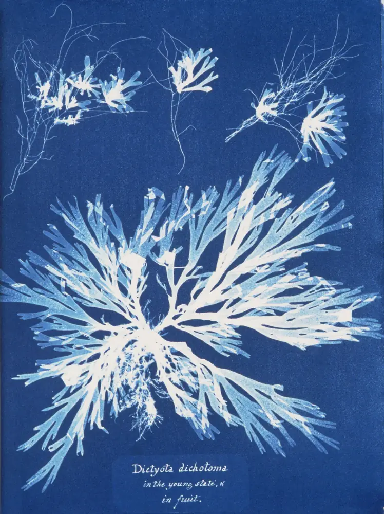
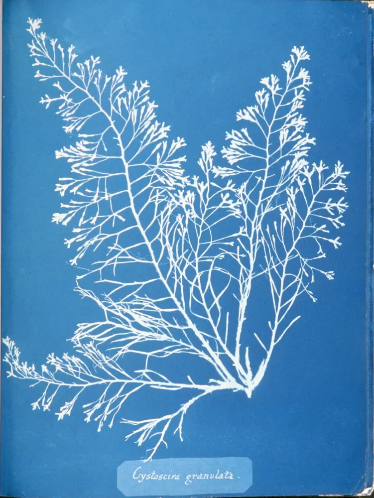
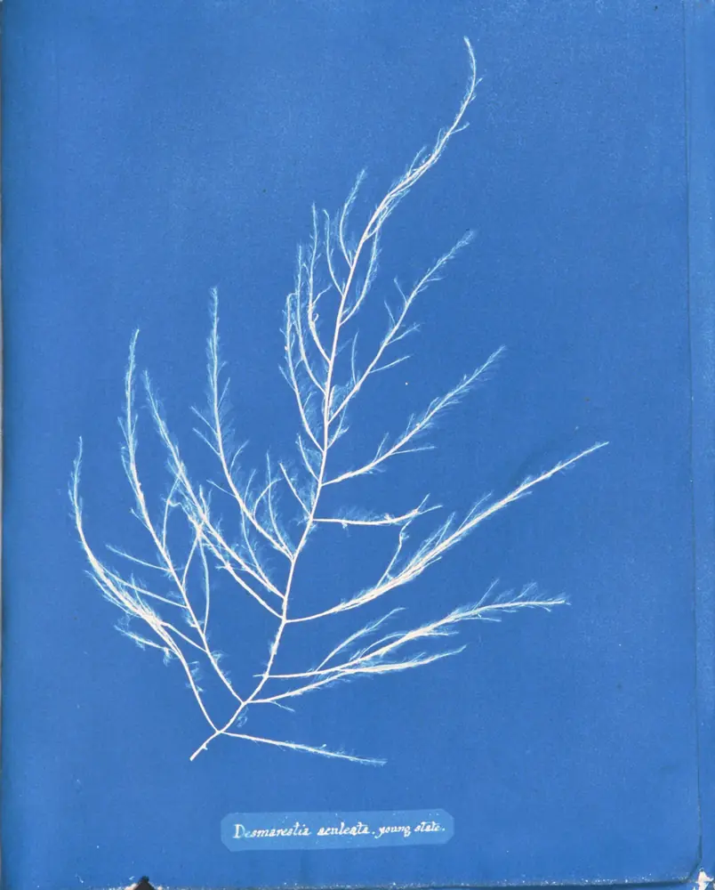

Cancer Evidence Explorer
Which exposures can cause which cancers, and how sure the evidence is for each link. From the IARC Monographs.
- exposures
- 185
- cancer types
- 68
- links
- 469
- languages
- 10

Free tools built from the IARC Monographs and published reviews by Wenxin Wan, a cancer epidemiologist.
They describe whole populations, not what caused any one person’s illness.
Four groups, from the most certain to the least. Read them like the steps of an exposure strip: the deeper the blue, the surer the evidence.
The agent can cause cancer in people. This is the group in which IARC is most certain. It does not say how large the risk is.
The agent probably causes cancer in people.
The agent may cause cancer in people. (Aspartame is in this group.)
The evidence does not meet the rules for any other group. It does not mean safe.
Tobacco smoking and processed meat are both in Group 1: the evidence that each can cause cancer is equally sure. The risks are not.
Seven ideas for reading a health headline →in 1,000 smokers get lung cancer by age 75 (about 10 to 12 in 100).
in 1,000 lifelong non-smokers do.
Each 50 grams of processed meat eaten every day raises the risk of bowel cancer by 18%.
European data. Quoted from the Cancer Evidence Explorer.

Two tools, free to use, in 10 languages.
Which exposures can cause which cancers, and how sure the evidence is for each link. From the IARC Monographs.

Risk factors for heart disease, stroke, type 2 diabetes, dementia and more, graded by how strong the evidence is.

The official recommendations for lowering your own cancer risk, coordinated by IARC (WHO) and its partners.
Fourteen actions for Europe, seventeen for Latin America and the Caribbean.
Read the recommendationsLearning by playing — three games.